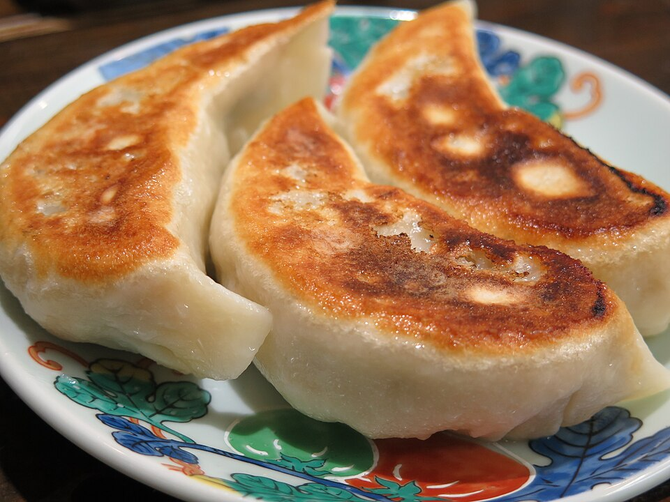

Home
Gyoza
Recipe by J. Kenji López-Alt free on Serious Eats.

Photo
by Douglas Paul Perkins
licensed under the Creative Commons
Attribution 3.0 Unported license.
Stuffed with juicy pork and cabbage.
Gyoza are Japanese dumplings, usually filled with ground meat (often pork), vegetables like cabbage and garlic chives, and seasonings. They’re typically pan-fried on one side to get a crispy bottom, then steamed so the top stays soft. This gives them a nice contrast in texture—crispy and tender at the same time.
Ingredients
For the Dumplings:
- 1/2kg finely minced cabbage
- 1 tablespoon salt
- 1/2kg ground pork
- 1 teaspoon white pepper
- 1 tablespoon minced garlic
- 1 tablespoon minced ginger
- 3 whole scallions minced
- 2 teaspoons sugar
- 1 package dumpling wrapper
- Vegetable or canola oil for cooking
For the Sauce:
- 1/2 cup rice vinegar
- 1/4 cup soy sauce
- 2 tablespoons chili oil
Steps
- For the Dumplings: Combine cabbage and 2 teaspoons salt in a large bowl and toss to combine. Transfer to a fine mesh strainer and set over the bowl. Let stand at room temperature for 15 minutes.
- Transfer cabbage to the center of a clean dish towel and gather up the edges. Twist the towel to squeeze the cabbage, wringing out as much excess moisture as possible. Discard liquid.
- Combine pork, drained cabbage, remaining teaspoon salt, white pepper, garlic, ginger, scallions, and sugar in a large bowl and knead and turn with clean hands until mixture is homogenous and starts to feel tacky/sticky. Transfer a teaspoon-sized amount to a microwave-safe plate and microwave on high power until cooked through, about 10 seconds. Taste and adjust seasoning with more salt, white pepper, and/or sugar if desired.
- Set up a work station with a small bowl of water, a clean dish towel for wiping fingers, a bowl with dumpling filling, a parchment-lined rimmed baking sheet for finished dumplings, and a stack of dumpling wrappers covered in plastic wrap.
- To form dumplings, hold one wrapper on top of a flat hand. Using a spoon, place spread a 2 teaspoon- to 1 tablespoon-sized amount of filling in the center of the wrapper, in the shape of a disk. Use the tip of the finger on your other hand to gently moisten the edge of the wrapper with water (do not use too much water). Wipe fingertip dry on kitchen towel.
- Working from one side, carefully seal filling inside wrapper by folding into a crescent shape, pleating in edge as it meets the other (see above for more detailed step-by-step instructions). Transfer finished dumplings to parchment lined baking sheet.
- At this point dumplings may be frozen by placing the baking sheet in the freezer. Freeze dumplings for at least 30 minutes then transfer to a zipper-lock freezer bag for long-term storage. Dumplings can be frozen for up to 2 months and cooked directly from the freezer.
- To Cook: Heat 1 tablespoon of vegetable oil in a medium non-stick skillet over medium heat until shimmering. Add as many dumplings as will fit in a single layer and cook, swirling pan, until evenly golden brown on the bottom surface, about 1 1/2 minutes.
- Increase heat to medium-high, add 1/2 cup of water and cover tightly with a lid. Let dumplings steam for 3 minutes (5 minutes if frozen), then remove lid. Continue cooking, swirling pan frequently and using a thin spatula to gently dislodge the dumplings if they've stuck to the bottom of the pan, until the water has fully evaporated and dumplings have crisped again, about 2 minutes longer. Slide dumplings onto a plate, turning them crisped-side-up before immediately serving with sauce.
- For the Sauce: Combine vinegar, soy sauce, and chili oil. Serve.
{kind=link}